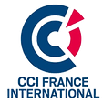

Immoblade
Étude par Nolan Jacquemont
Présentation
Immoblade est une start-up française de la Greentech créée en 2018, spécialisée dans les vitrages de protection solaire passifs, efficaces toute l'année, sans maintenance et permettant de limiter les consommations énergétiques. L’entreprise a été créée dans un but premier d’agir sur la transition écologique, en proposant des solutions low-tech. Elle propose des solutions adaptées aux particuliers et aux entreprises.
L’entreprise a reçu par ailleurs de nombreux prix, comme le Label Greentech Innovation du Ministère de la Transition Écologique en 2021, le prix de la CCI France - Suisse au Salon International des Inventions de Genève en 2018, ou encore d'autres comme le label EnerJ-Meeting et le label 1000 Efficient Solutions.
Présentation
Les Transfarmers est une société spécialisée dans le domaine des produits éco-conçus et éco-responsables.
Cette start-up française a été lancée en 2019 par 4 amis : Louais Jamin (Responsable de la gestion), Aliette Thomazo (Responsable communication), Thomas Colin (Responsable finances) et Henri Thomazo (Responsable opérations et productions) qui se sont unis dans le but de concevoir puis de commercialiser des pots de fleurs à compostage. L'idée étant de créer un composteur pour pots de fleurs qui nourrit les plantes avec les épluchures.
Ils ont donc démarré une campagne pour financer leur produit sur kisskissbankbank dans laquelle ils ont récoltés plus de 120 000 euros. Aujourd'hui, ils produisent encore des pots de fleurs composteurs qui sont destinés à des particuliers avant tout.

Les Transfarmers
Étude par James Sandall Robertson
BeeGuard
Étude par Cédric Pascal
Présentation
En 2016, le Toulousain Christian Lubat crée BeeGuard avec 2 de ses associés. Cette startup de la Greentech Française, spécialisée dans les outils d'aide pour les apiculteurs avec leurs ruches connectées, leurs accessoires et l’installation de ceux-ci. Elle a été créée car le domaine agricole nécessite beaucoup d’adaptations des produits afin qu’ils puissent mieux convenir à leurs environnements.
BeeGuard a notamment lancé une levée de fonds récemment afin de financer sa croissance et, ils ont pu récolter plus de 220 000 euros grâce à cette levée de fonds.
Elle a plusieurs partenaires notable, comme Airbus, le syndicat des Apiculteurs de midi-pyrénées, Agri sud-ouest Innovation, LaRégion Occitanie, ADA France, ADA Occitanie ou encore ApiNov. Et la startup reçoit le soutiens de BPI France, Nubbo L'Incubateur, Climate-KIC ou encore LaRégion Occitanie.